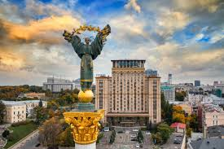
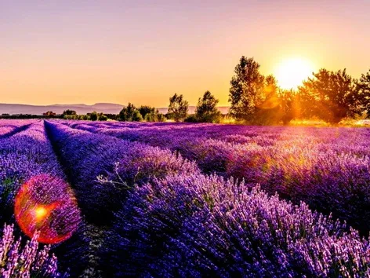

Мальовничі куточки України

Карпатські гори

Київ - столиця України

Лавандові поля
Україна - моя рідна країна, розташована в Східній Європі.
Карпатські гори
Київ - столиця України
Лавандові поля
Україна - країна з багатою історією та унікальною природою